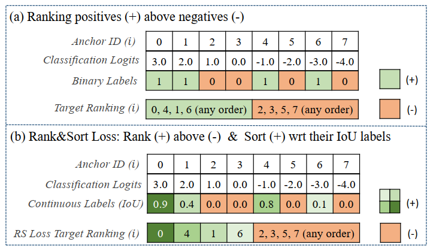
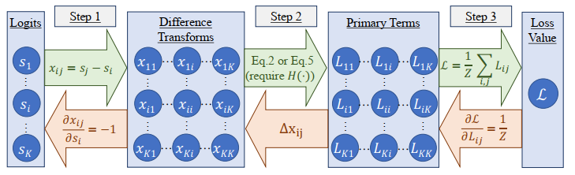
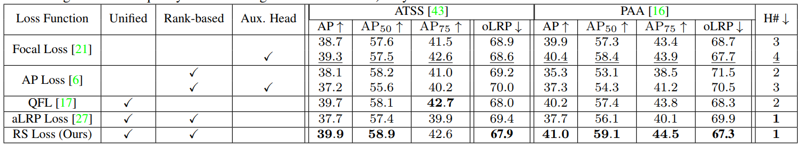
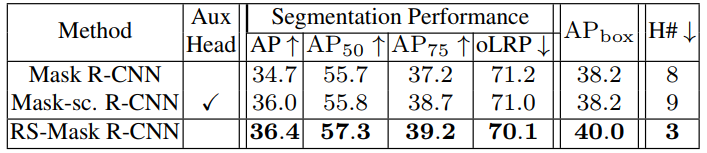

♥ 第一印象
Rank & Sort Loss for Object Detection and Instance Segmentation 这篇文章算是我读的 detection 文章里面比较难理解的，原因可能在于：创新的点跟普通的也不太一样；文章里面比较多公式。但之前也有跟这方面的工作如 AP Loss、aLRPLoss 等。它们都是为了解决一个问题：单阶段目标检测器分类和回归在训练和预测不一致的问题。那么 Rank & Sort Loss 又在以上的工作进行了什么改进呢？又解决了什么问题呢？
关于训练预测不一致的问题
简单来说，就是在分类和回归在训练的时候是分开的训练，计算 loss 并进行反向优化。但是在预测的时候却是用分类分数排序来进行 nms 后处理。这里可能导致一种情况就是分类分数很高，但是回归不好（这个问题在 FCOS 中有阐述）。
之前的工作
常见的目标检测网络一般会使用 nms 作为后处理，这时我们常常希望所有正样本的得分排在负样本前面，另外我们还希望位置预测更准确的框最后被留下来。之前的 AP Loss 和 aLRP Loss 由于需要附加的 head 来进行分类精度和位置精度综合评价（其实就是为了消除分类和回归的不一致问题，如 FCOS 的 centerness、IoU head 之类的），确实在解决类别不均衡问题（正负样本不均衡）等有着不错的效果，但是需要更多的时间和数据增强来进行训练。
Rank & Sort Loss
Rank & Sort Loss (RS Loss) 并没有增加额外的辅助 head 来进行解决训练和预测不一致的问题，仅通过 RS Loss 进行简单训练：
- 通过 Sort Loss 加上 Quality Focal Loss 的启发（避免了增加额外的 head），使用 IoU 来作为分类 label，使得可以通过连续的数值 (IoU) 来作为标签给预测框中的正样本进行排序。
- 通过 Rank Loss 使得所有正样本都能排序在负样本之前，并且只选取了较高分数的负样本进行计算，在不使用启发式的采样情况下解决了正负样本不均衡的问题。
- 不需要进行多任务的权重或系数调整。

由上图可以看出，一般的标签分配正样本之间是没有区分的，但是在 RS Loss 里面正样本全部大于负样本，然后在正样本之间也会有排序，排序的依据就是 Anchor 经过调整后跟 GT 的 IoU 值。
♠ 对基于 rank 的 loss 的回顾
由于基于排序的特性，它不是连续可微。因此，常常采用了误差驱动的方式来进行反向传播。以下来复习一下如何将误差驱动优化融进反向传播：
Loss 的定义
$\mathcal{L} = \frac{1}{Z} \underset{i \in \mathcal{P}}{\sum} \ell(i)$ ，其中 $Z$ 是用来归一化的常数，$\mathcal{P}$ 则是所有正样本的集合，$\ell(i)$ 是计算正样本 $i$ 的误差项。
Loss 的计算

Step 1. 如上图所示，误差 $x_{ij}$ 的值为样本 $i$ 与样本 $j$ 的预测分数之差。
Step 2. 用每一对样本的误差值 $x_{ij}$ 来计算这对样本对样本 $i$ 产生的 loss 值，由下述公式计算得到：
$$
L_{ij} = \begin{cases}
\ell(i)p(j|i),\quad for\ i \ \in \mathcal{P},j \ \in \ \mathcal{N} \\\
0,\qquad \qquad \ otherwise,
\end{cases}
$$
其中 $p(j|i)$ 是 $\ell(i)$ 分布的概率密度质量函数，$\mathcal{N}$ 则是所选负样本的集合。一般借鉴了感知学习（感知机）来进行误差驱动，因此使用了阶跃函数 $H(x)$ 。对于第 $i$ 个样本，$rank(i)=\underset{j \in \mathcal{P\cup N}}{\sum} H(x_{ij})$ 为该样本在所有样本的位次，$rank^{+}(i)=\underset{j \in \mathcal{P}}{\sum} H(x_{ij})$ 为该样本在所有正样本中的位次，$rank^{-}(i)=\underset{j \in \mathcal{N}}{\sum} H(x_{ij})$ 为该样本在较大概率分数负样本中的位次，这个位次真值应该为 0 ，否则将产生 loss （因为所有正样本需要排在所有负样本之前），对于 AP Loss 来说 $\ell(i)$ 和 $p(j|i)$ 可以分别表示为 $\frac{rank^{-}(i)}{rank(i)}$ 和 $\frac{H(x_{ij})}{rank^{-}(i)}$ 。其中可以推断出 $L_{ij}=\frac{H(x_{ij})}{rank(i)}$ 即样本 $j$ 对 $i$ 产生的 loss，这里只会在其概率分数大于样本 $i$ 时会产生 loss。Step 3. 计算最终的 Loss，$\mathcal{L}=\frac{1}{Z}\underset{i \in \mathcal{P}}{\sum} \ell(i)=\frac{1}{Z}\underset{i \in \mathcal{P}}{\sum} \underset{j \in \mathcal{N}}{\sum} L_{ij}$ 。
Loss 的优化
优化其实就是一个求梯度的过程，这里我们可以使用链式求导法则，然而 $L_{ij}$ 是不可微的，因此其梯度可以使用 $\Delta x_{ij}$ ，我们可以结合上图进行以下推导：
$$
\begin{aligned}
\frac{\partial \mathcal{L}}{\partial s_i} &= \sum_{j} \frac{\partial \mathcal{L}}{\partial L_{ij}} \Delta x_{ij} \frac{\partial x_{ij}}{\partial s_i} + \sum_{j} \frac{\partial \mathcal{L}}{\partial L_{ji}} \Delta x_{ji} \frac{\partial x_{ji}}{\partial s_i}\\\
& = \frac{1}{Z}\sum_{j} \Delta x_{ji} - \frac{1}{Z}\sum_{j} \Delta x_{ij} \\\
& = \frac{1}{Z} \Big( \sum_{j}\Delta x_{ji} - \sum_{j}\Delta x_{ij}\Big)
\end{aligned}
$$
其中 $\Delta x_{ij}$ 可以由 $-(L^{}_{ij} - L_{ij})$ 计算得到并进行误差驱动更新值，其中 $L^{}_{ij}$ 是 GT。AP Loss 和 aLRP Loss 都是通过这种方式进行优化的。文章对以上的部分一些改进
RS Loss 认为：
$L^{*}_{ij}$ 不为 0 时解释性比较差（因为 $L$ 为排序误差产生的 loss，按理来说应该没有误差是最好的，也就是 loss 为 0，那么 GT 应该为 0 才对）
关于 $L_{ij}$ 的计算来说，只有样本 $i$ 为正样本，$j$ 为负样本的时候才会产生非零值，其忽略了其他情况的一些误差。
因此对 Loss Function 进行了重定义为：
$$
\mathcal{L}=\frac{1}{Z}\underset{i \in \mathcal{P \cup N}}{\sum} (\ell(i) - \ell^{*}(i))
$$
其中 $\ell^{*}(i)$ 是期望的误差，这里其实考虑了 $i$ 属于正负样本的不同情况，另外直接使用与期望的误差之间差值作为 loss 的值，使得目标 loss 只能向着 0 优化，解决了上述两个问题。关于 Loss 的计算则改为：
$$
\mathcal{L}=\frac{1}{Z}\underset{i \in \mathcal{P \cup N}}{\sum} (\ell(i) - \ell^{*}(i))p(j|i)
$$
最后的 Loss 的优化，由于我们的最终 loss 目标是 0，所以 $\Delta x_{ij} = -(L^{*}_{ij} - L_{ij}) = L_{ij}$ ，最终优化可以简化为：
$$
\frac{\partial \mathcal{L}}{\partial s_i} = \frac{1}{Z} \Big( \sum_{j}L_{ji} - \sum_{j}L_{ij} \Big)
$$
♦ Rank & Sort Loss
Loss 的定义
$$
\mathcal{L}_{RS}=\frac{1}{|\mathcal{P}|}\underset{i \in \mathcal{P}}{\sum} (\ell_{RS}(i) - \ell_{RS}^{*}(i))
$$
其中 $\ell_{RS}(i)$ 是当前 rank error 和 sort error 的累积起来的和，其可以用下式表示
$$
\ell_{RS}(i) = \frac{rank^{-}(i)}{rank(i)} + \frac{\underset{j \in \mathcal{P}}{\sum} H(x_{ij})(1 - y_j)}{rank^{+}(i)}
$$
前一项为 rank error，后一项为 sort error，后一项对分数大于 $i$ 的样本乘以了一个 $1-y$ 的权重，这里的 $y$ 是分数标签（即该样本与 GT 的 IoU 值）。这里其实使得那些分数比样本 $i$ 大，但是分数的标签又不是特别大（回归质量不是特别好）的样本进行了惩罚使其产生较大的 error。对于误差的标签，首先 rank error 我们希望所有正样本都排在负样本之前，而这时 rank error 为 0，而对于 sort error 我们则希望只有标签分数大于样本 $i$ 的预测分数可以比它大，从而产生 error，此时产生期望的误差（也就是回归比 $i$ 好的样本，我们是可以容忍分数比它高的），这部分样本由于有期望的误差，在计算 loss 时会产生更小的 loss。那些分数的标签不行，但预测分数又比较大的会产生更大的 loss:
$$
\ell^{*}_{RS}(i) = 0 + \frac{\underset{j \in \mathcal{P}}{\sum} H(x_{ij})[y_j\ge y_i](1 - y_j)}{H(x_{ij})[y_j\ge y_i]}
$$
同时论文还将 $H(x_{ij})$ 平滑进入区间 $[-\delta_{RS},\delta_{RS}]$ 中，其中 $x_{ij} = x_{ij}/2\delta_{RS} + 0.5$ 。
Loss 的计算
关于 loss 的计算同上面也是进行三部曲，最后得到:
$$
L_{ij}=\begin{cases}
(\ell_{R}(i) - \ell_{R}^{*}(i))p_{R}(j|i),\quad for\ i \in \mathcal{P},j\ \in \mathcal{N} \\\
(\ell_{S}(i) - \ell_{S}^{*}(i))p_{S}(j|i),\quad for\ i \in \mathcal{P},j\ \in \mathcal{P} \\\
0, \quad \qquad \qquad \qquad \qquad \ ohterwise
\end{cases}
$$
其中
$$
\begin{aligned}
p_{R}(j|i)&=\frac{H(x_{ij})}{\underset{k \in \mathcal{N}}{\sum} H(x_{ik})} =\frac{H(x_{ij})}{rank^{-}(i)} \\\
p_{S}(j|i)&=\frac{H(x_{ij})[y_j < y_i]}{\underset{k \in \mathcal{P}}{\sum} H(x_{ik})[y_k < y_i]}
\end{aligned}
$$
这里对于 rank 的概率质量函数只会统计分数大于 $i$ 的样本，这里其实和之前没有什么区别；对于 sort 而言概率质量函数只会统计分数大于 $i$ 且分数的标签小于 $i$ 的样本。
以上的 loss 计算则具体为：
$$
L_{ij}=\begin{cases}
\frac{rank^{-}(i)}{rank(i)}\frac{H(x_{ij})}{rank^{-}(i)},\quad \qquad \qquad \ \qquad \qquad \ \qquad \qquad \qquad \quad \ for\ i \in \mathcal{P},j\ \in \mathcal{N} \\\
\Bigg(\frac{\underset{j \in \mathcal{P}}{\sum} H(x_{ij})(1 - y_j)}{rank^{+}(i)} - \frac{\underset{j \in \mathcal{P}}{\sum} H(x_{ij})[y_j\ge y_i](1 - y_j)}{\underset{j \in \mathcal{P}}{\sum}H(x_{ij})[y_j\ge y_i]}\Bigg)\frac{H(x_{ij})[y_j < y_i]}{\underset{k \in \mathcal{P}}{\sum} H(x_{ik})[y_k < y_i]},\quad for\ i \in \mathcal{P},j\ \in \mathcal{P} \\\
0, \qquad \qquad \qquad \qquad \qquad \qquad \qquad \qquad \qquad \qquad \qquad \ ohterwise
\end{cases}
$$
最后再对 $L_{ij}$ 进行积分（离散就是求和）$\mathcal{L}_{RS}(i)=\frac{1}{|\mathcal{P}|}\underset{j \in \mathcal{P \cup N}}{\sum} L_{ij}=\frac{1}{|\mathcal{P}|}L_{i}$ ，得到最终的 loss：$\mathcal{L}_{RS}=\frac{1}{|\mathcal{P}|}\underset{i \in \mathcal{P}}{\sum} L_{i}$
Loss的优化
这里一定要注意 $i$ 和 $j$ 这两个下标的顺序，顺序不一样就会导致计算的结果和方式不一样。
对于 $i \in \mathcal{N}$ 时，
根据上式中的 $L_{ij}$ 的计算规则，实际上我们只需要计算 rank 产生的 loss 就好，因为 sort 产生的 loss 只会在正样本之间计算，而 rank 产生的 loss 需要正样本对所有负样本的计算，因此只有 $j\ \in \mathcal{P}, i \ \in \mathcal{N}$ 符合（注意这里的顺序噢，$i,j$ 就不行噢）：
$$
\begin{aligned}
\frac{\partial L_{RS}}{\partial s_i} &= \frac{1}{|\mathcal{P}|} \Big(-0 \cdot\underset{j \in \mathcal{P}}{\sum}L_{ij}+\underset{j \in \mathcal{P}}{\sum}L_{ji}-0 \cdot \underset{j \in \mathcal{N}}{\sum}L_{ij}+0 \cdot \underset{j \in \mathcal{N}}{\sum}L_{ji}\Big) \\\
&= \frac{1}{|\mathcal{P}|}\underset{j \in \mathcal{P}}{\sum}\Big(\ell_{R}(j)-\cancelto{0}{\ell^{*}_{R}(j)}\Big)p_{R}(i|j) \\\
&= \frac{1}{|\mathcal{P}|}\underset{j \in \mathcal{P}}{\sum}\ell_{R}(j)p_{R}(i|j) \quad for \ i \in \mathcal{N}
\end{aligned}
$$
对于 $i \in \mathcal{P}$ 时，
这时候只有 $j\ \in \mathcal{N}, i \ \in \mathcal{P}$ 这种情况是不行的（因为这样就是计算每一个负样本与所有正样本的 loss 了）:
$$
\begin{aligned}
\frac{\partial L_{RS}}{\partial s_i} &= \frac{1}{|\mathcal{P}|} \Big(-\underset{j \in \mathcal{P}}{\sum}L_{ij}+\underset{j \in \mathcal{P}}{\sum}L_{ji}-\underset{j \in \mathcal{N}}{\sum}L_{ij}+0 \cdot\underset{j \in \mathcal{N}}{\sum}L_{ji}\Big) \\\
&= \frac{1}{|\mathcal{P}|}\Big(-\underset{j \in \mathcal{P}}{\sum}(\ell_{S}(i) - \ell_{S}^{*}(i))p_{S}(j|i)+\underset{j \in \mathcal{P}}{\sum}(\ell_{S}(j) - \ell_{S}^{*}(j))p_{S}(i|j)-\underset{j \in \mathcal{N}}{\sum}(\ell_{R}(i) - \ell_{R}^{*}(i))p_{R}(j|i)+0\Big) \\\
&= \frac{1}{|\mathcal{P}|}\Big(-(\ell_{S}(i) - \ell_{S}^{*}(i))\underset{j \in \mathcal{P}}{\sum}p_{S}(j|i)+\underset{j \in \mathcal{P}}{\sum}(\ell_{S}(j) - \ell_{S}^{*}(j))p_{S}(i|j)-(\ell_{R}(i) - \ell_{R}^{*}(i))\underset{j \in \mathcal{P}}{\sum}p_{R}(j|i)+0\Big) \\\
&=\frac{1}{|\mathcal{P}|}\Big(-(\ell_{S}(i) - \ell_{S}^{*}(i))+\underset{j \in \mathcal{P}}{\sum}(\ell_{S}(j) - \ell_{S}^{*}(j))p_{S}(i|j)-(\ell_{R}(i) - \ell_{R}^{*}(i))+0\Big) \quad for \ i \in \mathcal{P}
\end{aligned}
$$
需要记住的是，rank 中的 loss $L_{kl}$ 其中必须满足 $k \in \mathcal{P},l\ \in \mathcal{N}$ ，sort 中的 loss $L_{kl}$ 其中必须满足 $k \in \mathcal{P},l\ \in \mathcal{P}$ 其余情况均为 0，因此一对样本要么产生 rank loss（一正样本一负），要么产生 sort （两正）
最终的梯度为样本 $i$ 为正负样本产生梯度之和：
$$
\begin{aligned}
\frac{\partial L_{RS}}{\partial s_i} = \frac{1}{|\mathcal{P}|}\Big(
&\underset{j \in \mathcal{P}}{\sum}\ell_{R}(j)p_{R}(i|j)-\ell_{R}(i) \\\
+&\underset{j \in \mathcal{P}}{\sum}(\ell_{S}(j) - \ell_{S}^{*}(j))p_{S}(i|j)-(\ell_{S}(i) - \ell_{S}^{*}(i))\Big)
\end{aligned}
$$
关于多任务的权重，使用下述方法避免了人工设置权重：
$$
\mathcal{L}_{RS-model} = \mathcal{L}_{RS} + \lambda_{box}\mathcal{L}_{box}
$$
其中 $\lambda_{box} = \left|\mathcal{L}_{RS}/\mathcal{L}_{box} \right|$
算法的表现
RS Loss 解决训练预测不一致以及类别不均衡等问题，思路还是挺新颖的，而且具有较好的表现。
单阶段网络的性能

两阶段网络的性能

可以看到还是在下游任务上还是又不小的提升的，只得大家借鉴其思路，创新自己的工作。
♣ 核心代码解读
由于排序的方式来计算 loss 是不可微的，因此我们需要通过代码自己实现上述 Loss 计算中计算出来的 RS-Loss 和 Loss 优化中计算出来的梯度。首先需要用到 torch 里面的自动求导机制
torch.autograd.Function，重写里面的forward和backward，关于这个我们最后再讲怎么编写。class RankSort(torch.autograd.Function): @staticmethod def forward(ctx, logits, targets, delta_RS=0.50, eps=1e-10): # logits 和 targets 的 shape 是一样的，都是 [N*80] # 其中 N 是预测框的个数 logits 就是 one-hot label 然后展平 classification_grads = torch.zeros(logits.shape).cuda() # 取出正样本的 mask fg_labels = (targets > 0.) # 得到正样本的预测分数 fg_logits = logits[fg_labels] # 得到正样本的真值分数 fg_targets = targets[fg_labels] # 得到正样本的个数 fg_num = len(fg_logits) # 以比正样本预测分数的最小值小 delta_RS，这里是 0.5 为阈值 # 这样做的原因，应该是只调整那些预测分数比较大的负样本 # 这样做的优点在于： # i）分数较大的负样本更可能影响正样本的排序 所以在 BP 优化它们 # ii）另外大多数负样本分数低 但其实我们不用管分数低，不让它们参与计算 # 从而解决了样本不均衡问题。 threshold_logit = torch.min(fg_logits) - delta_RS # 得到相对（较高分数）负样本的 mask relevant_bg_labels = ((targets==0) & (logits>=threshold_logit)) # 得到相对负样本的预测分数 relevant_bg_logits = logits[relevant_bg_labels] # 初始化相对负样本、正样本的反向传播梯度 relevant_bg_grad = torch.zeros(len(relevant_bg_logits)).cuda() fg_grad = torch.zeros(fg_num).cuda() # 初始化 sorting_error、ranking_error sorting_error = torch.zeros(fg_num).cuda() ranking_error = torch.zeros(fg_num).cuda()接下来就是计算 RS Loss 梯度的部分，我们首先保证梯度能够正确实现，因为只要梯度能被正确计算，那么优化的过程就是正常的。
# 首先对所有正样本的预测分数进行从小到大排序 order=torch.argsort(fg_logits) for ii in order: # 这里其实每个样本和正样本 i 的分数差 x_{ij} 即 Step1 # 所有正样本与正样本 i 的分数差 fg_relations=fg_logits - fg_logits[ii] # 所有负样本与正样本 i 的分数差 bg_relations=relevant_bg_logits - fg_logits[ii] if delta_RS > 0: # 这里没有直接使用阶跃函数 H(x)，而是进行调整后在 0 到 1 截断 fg_relations=torch.clamp( fg_relations/(2*delta_RS)+0.5, min=0, max=1 ) # 这里分数比样本 i 小 0.5 的样本，与 i 形成的差都会截断为 0 # 反之大于 0.5 的样本，形成的差都会截断为 1 bg_relations=torch.clamp( bg_relations/(2*delta_RS)+0.5, min=0, max=1) else: fg_relations = (fg_relations >= 0).float() bg_relations = (bg_relations >= 0).float()接下来我们先来计算样本 $i$ 的 rank error，首先我们可以由前面的结论得出下列公式：
$$
\begin{aligned}
rank_error_i &= \underset{j \in \mathcal{N}}{\sum}(\ell_{R}(i) - \ell_{R}^{*}(i))p_{R}(j|i) \quad for\ i \in \mathcal{P},j\ \in \mathcal{N}\\\
&=\underset{j \in \mathcal{N}}{\sum}\frac{rank^{-}(i)}{rank(i)}\frac{H(x_{ij})}{rank^{-}(i)}, \\\
&=\frac{\underset{j \in \mathcal{N}}{\sum}H(x_{ij})}{rank(i)} \\\
&=\frac{rank^{-}(i)}{rank(i)}
\end{aligned}
$$# 计算所有正样本中排在 i 之前的样本个数（大致可以这么理解） # 因为代码的实现，其实计算了所有分数在 i 左右 0.5 的样本与 i 的差之总和 rank_pos = torch.sum(fg_relations) # 计算相对负样本中排在 i 之前的样本个数（这部分样本在预测中很容易被预测为正样本，所以 FP） FP_num = torch.sum(bg_relations) # 总的排序当然是两者之和啦 rank = rank_pos + FP_num # 上述公式最后一行不就是 FP_num/rank 嘛 ranking_error[ii] = FP_num / rank接下来我们先来计算样本 $i$ 的 sort error，首先我们可以由前面的结论得出下列公式：
$$
\begin{aligned}
sort_error_i &= \underset{j \in \mathcal{P}}{\sum}(\ell_{S}(i) - \ell_{S}^{*}(i))p_{S}(j|i) \quad for\ i \in \mathcal{P},j\ \in \mathcal{P}\\\
&=\underset{j \in \mathcal{P}}{\sum}\Bigg(\frac{\underset{j \in \mathcal{P}}{\sum} H(x_{ij})(1 - y_j)}{rank^{+}(i)} - \frac{\underset{j \in \mathcal{P}}{\sum} H(x_{ij})[y_j\ge y_i](1 - y_j)}{\underset{j \in \mathcal{P}}{\sum}H(x_{ij})[y_j\ge y_i]}\Bigg)\frac{H(x_{ij})[y_j < y_i]}{\underset{k \in \mathcal{P}}{\sum} H(x_{ik})[y_k < y_i]}
\end{aligned}
$$
这里由于 $\frac{\underset{j \in \mathcal{P}}{\sum} H(x_{ij})(1 - y_j)}{rank^{+}(i)}$ 和 $\frac{\underset{j \in \mathcal{P}}{\sum} H(x_{ij})[y_j\ge y_i](1 - y_j)}{H(x_{ij})[y_j\ge y_i]}$ 的分子或者分母会对 $j$ 进行积分，那么分子和分母将不会和 $j$ 有关系，那么上式可以变为：
$$
\begin{aligned}
&\Bigg(\frac{\underset{j \in \mathcal{P}}{\sum} H(x_{ij})(1 - y_j)}{rank^{+}(i)} - \frac{\underset{j \in \mathcal{P}}{\sum} H(x_{ij})[y_j\ge y_i](1 - y_j)}{\underset{j \in \mathcal{P}}{\sum}H(x_{ij})[y_j\ge y_i]}\Bigg)\underset{j \in \mathcal{P}}{\sum}\frac{H(x_{ij})[y_j < y_i]}{\underset{k \in \mathcal{P}}{\sum} H(x_{ik})[y_k < y_i]} \\\
=&\Bigg(\frac{\underset{j \in \mathcal{P}}{\sum} H(x_{ij})(1 - y_j)}{rank^{+}(i)} - \frac{\underset{j \in \mathcal{P}}{\sum} H(x_{ij})[y_j\ge y_i](1 - y_j)}{\underset{j \in \mathcal{P}}{\sum}H(x_{ij})[y_j\ge y_i]}\Bigg)\frac{\underset{j \in \mathcal{P}}{\sum}H(x_{ij})[y_j < y_i]}{\underset{k \in \mathcal{P}}{\sum} H(x_{ik})[y_k < y_i]} \\\
=&\frac{\underset{j \in \mathcal{P}}{\sum} H(x_{ij})(1 - y_j)}{rank^{+}(i)} - \frac{\underset{j \in \mathcal{P}}{\sum} H(x_{ij})[y_j\ge y_i](1 - y_j)}{\underset{j \in \mathcal{P}}{\sum}H(x_{ij})[y_j\ge y_i]}
\end{aligned} \tag{s}
$$# 这里实现的是 s 中的前面一项，计算当前的 sort_error # 这里使用 1-fg_targets 作为权重，是希望那些分数标签特别大的如：0.8、0.9 不产生较大 error current_sorting_error = torch.sum(fg_relations * (1 - fg_targets)) / rank_pos # 这里实现的是 s* 中的后面一项，首先得到分数标签大于 i 的样本的 mask iou_relations = (fg_targets >= fg_targets[ii]) # 然后得到期望的分母的积分项，这里标签分数小于 i 的样本与 i 的分数差都会变为 0 # 意思是不允许标签分数小于 i ，预测分数还比 i 大或者接近 i target_sorted_order = iou_relations * fg_relations # s* 中的后面一项的分母 rank_pos_target = torch.sum(target_sorted_order) # 最后得到 s* 中的后面一项 target_sorting_error= torch.sum(target_sorted_order * (1 - fg_targets)) / rank_pos_target sorting_error[ii] = current_sorting_error - target_sorting_error之前我们分别计算过当样本 $i$ 为正样本和负样本时产生的梯度，因为 $L_{R}$ 和 $L_{S}$ 是相加得到的 $L_{RS}$，所以我们可以先计算由 rank error 产生的 loss得出下列公式：
$$
\begin{aligned}
\frac{\partial L_{R}}{\partial s_i}
&= \frac{1}{|\mathcal{P}|}\Big(\underset{j \in \mathcal{P}}{\sum}\ell_{R}(j)p_{R}(i|j)-\ell_{R}(i)\Big) \\\
&= \frac{1}{|\mathcal{P}|}\Big(\underset{j \in \mathcal{P}}{\sum}\frac{rank^{-}(j)}{rank(j)}\frac{H(x_{ji})}{rank^{-}(j)}-\frac{rank^{-}(i)}{rank(i)}\Big) \\\
&= \frac{1}{|\mathcal{P}|}\Big(\underset{j \in \mathcal{P}}{\sum}\frac{H(x_{ji})}{rank(j)}-\frac{rank^{-}(i)}{rank(i)}\Big)
\end{aligned}
$$
注意这里的表达式和之前的 rank error 是不一样的，这里对 $j$ 积分并不能消去概率质量函数 $p_{R}(i|j)$，因为$\ell_{R}(j)$ 也是跟 $j$ 相关的，另外需要注意的是前一项的 $i \in \mathcal{N}$，后一项的 $i \in \mathcal{P}$。因此后一项等于 rank error。
if FP_num > eps:
# 这里注意 j 是正样本，那么由之前的代码得正样本的 1/rank = ranking_error[ii]/FP_num
# 分子跟之前一样为 bg_relations
# 由于我们是对正样本进行求和，因此只能每次计算进行这个正样本对所有相对负样本产生的梯度
# 下行代码只算了一个正样本的情况，并不是上述公式完全实现。因此注意到 relevant_bg_grad 没有下标
relevant_bg_grad += (bg_relations * (ranking_error[ii] / FP_num))
# 这就是算对正样本的梯度，因此根据上式就等于 ranking_error[ii]
fg_grad[ii] -= ranking_error[ii] - 接着我们计算一下由 sort loss 产生的梯度，同样我们先由之前的推到列出等式，这里第一项为什么不能通过积分消去概率质量函数同上：
$$
\begin{aligned}
\frac{\partial L_{S}}{\partial s_i} &= \frac{1}{|\mathcal{P}|}\Big(\underset{j \in \mathcal{P}}{\sum}(\ell_{S}(j) - \ell_{S}^{*}(j))p_{S}(i|j)-\big(\ell_{S}(i) - \ell_{S}^{*}(i)\big)\Big) \\\
&= \frac{1}{|\mathcal{P}|}\underset{j \in \mathcal{P}}{\sum}\Bigg(\frac{\underset{j \in \mathcal{P}}{\sum} H(x_{ji})(1 - y_i)}{rank^{+}(j)} - \frac{\underset{j \in \mathcal{P}}{\sum} H(x_{ji})[y_i\ge y_j](1 - y_i)}{\underset{j \in \mathcal{P}}{\sum}H(x_{ji})[y_i\ge y_j]}\Bigg)\frac{H(x_{ji})[y_i < y_j]}{\underset{k \in \mathcal{P}}{\sum} H(x_{jk})[y_k < y_j]} -\frac{1}{|\mathcal{P}|}\big(\ell_{S}(i) - \ell_{S}^{*}(i)\big)
\end{aligned}
$$
# 这里得到分数标签小于 i 的样本的 mask
missorted_examples = (~iou_relations) * fg_relations
# 计算概率质量函数的分母
sorting_pmf_denom = torch.sum(missorted_examples)
if sorting_pmf_denom > eps:
# 大括号内的就是 sorting_error[ii]，而概率密度函数为 missorted_examples/sorting_pmf_denom
# 这里跟之前一样只能计算一个正样本 j 对所有正样本的梯度贡献，因此 fg_grad 没有下标
fg_grad += (sorting_error[ii] * (missorted_examples / sorting_pmf_denom))
# 后面一项则是算的样本 i 的 sort error 对 i 的梯度
fg_grad[ii] -= sorting_error[ii]
# 最后进行归一化
classification_grads[fg_labels]= (fg_grad/fg_num)
classification_grads[relevant_bg_labels]= (relevant_bg_grad/fg_num)
# 保存计算的梯度
ctx.save_for_backward(classification_grads)
return ranking_error.mean(), sorting_error.mean()至此 RS loss 和其梯度计算完毕
番外篇 -> torch.autograd.Function 的使用 帮你搞定自定义求导的情况!!!
其实，就需要重写两个成员函数 forward 和 backward 里面的内容
# 先定义一个类 MyOperation，它需要继承 torch.autograd.Function
class MyOperation(torch.autograd.Function):
# 静态成员函数 forward 实现的就是你的算子前向怎么算嘛
@staticmethod
def forward(ctx, x, y, z, b):
# 这里我们设定为 4 个输入， 2 个输出
output1 = x**2 + y**3 + z + b
# 我们假定只需要对 x 进行求梯度，这里我们定义它的梯度为 x
# 这里的梯度都是乱写的，反正都是自定义
x_grad1 = x
output2 = x**3 + y
x_grad2 = torch.full_like(x, 3)
# 把梯度保存下来传给 backward
ctx.save_for_backward(x_grad1, x_grad2)
return output1.mean(), output2.mean()
# backward 是 forward 的逆过程
# 因此 forward 有几个输入 backward 就有几个输出
# 因此 forward 有几个输出 backward 就有几个输入
@staticmethod
def backward(ctx, ouput1_grad, output2_grad):
# ouput1_grad, output2_grad 为正向的下一层，反向上一层的梯度
# 其实也是这一层输出的梯度
# 获取之前保存的对这一层输入的梯度
g1, g2 = ctx.saved_tensors
# 链式求导法则，这里 g1 为 x_grad1，它只与 output1 的梯度有关
g1 *= output1_grad
# 同理
g2 *= output2_grad
# 注意最后 x 的梯度应该是两个 output 造成的梯度之和
# 另外咱们需要求导的只有 x, 所以其余(y, z, b)用 None
return g1+g2, None, None, None
# 调用的时候直接使用 apply
x = torch.tensor([20, 16], dtype=torch.float32, requires_grad=True)
y = torch.tensor([34, 2], dtype=torch.float32, requires_grad=True)
z = torch.tensor([3, 14], dtype=torch.float32, requires_grad=True)
b = torch.tensor([2, 4], dtype=torch.float32, requires_grad=True)
output = MyOperation.apply(x.cuda(), y.cuda(), z.cuda(), b.cuda())
loss = output[0] * 3 + output[0] * 4
loss.backward()
print(x.grad)这样它就会按照你定义的方式去反向传播啦！完结 🚀🚀🚀